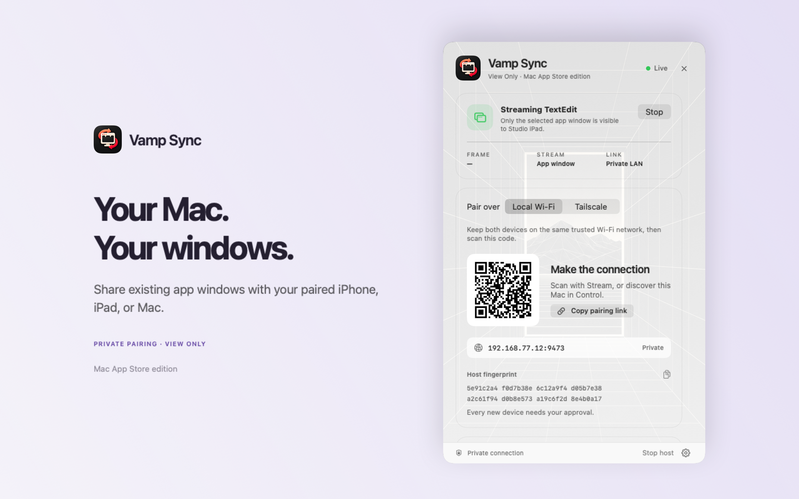
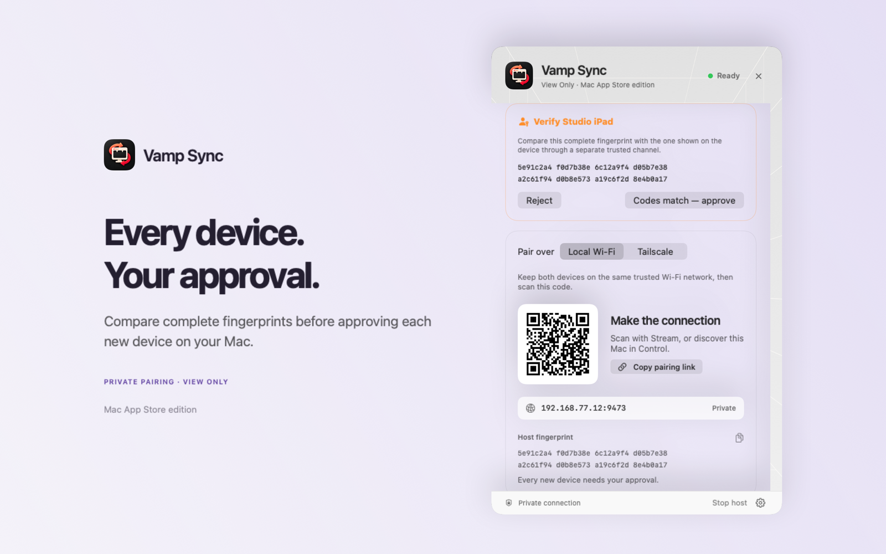
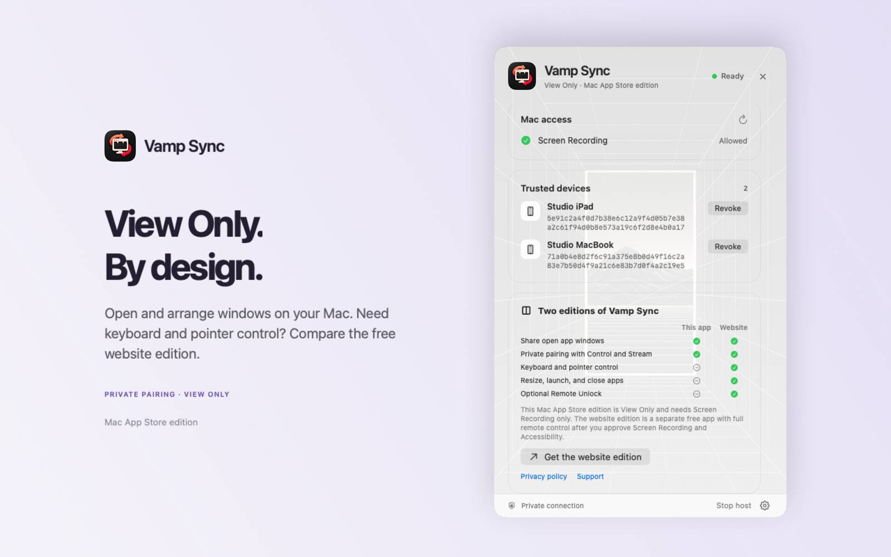

01PAIRING
Verify every new device
Compare the complete device fingerprint before approving Vamp Control or Vamp Stream.
Vamp Sync is your Mac host for Vamp Control and Vamp Stream. Pair once, choose an app window, and use it from another Mac, iPhone, or iPad. Everything stays on your trusted LAN or private Tailscale network.
Apple Silicon · macOS 13+ · runs in the menu bar.
On the Mac you want to reach

See reachability, permissions, pairing requests, approved devices, and runtime controls in one compact menu-bar surface.
Compare the complete device fingerprint before approving Vamp Control or Vamp Stream.
Choose the Mac app to share from Control or Stream. Sync captures that app window.
Keyboard and pointer input is in the website edition only, and only after trust and Accessibility consent.


The website and App Store editions are separate downloads. The edition installed on your Mac sets what connected clients can do.
Pairs over trusted Wi-Fi or Ethernet, or over your own Tailscale network.
Grant permissions to Vamp Sync itself. The website edition uses both; the App Store edition needs only Screen Recording. Sync reports readiness but never bypasses macOS consent.
Screen Recording lets Sync share the selected app window with your paired client.
Keyboard and pointer control require explicit Accessibility permission.
Install Vamp Sync on the Mac you want to reach, grant the required permissions, then approve your client after verifying its identity.
A dedicated menu-bar app with its own bundle, permissions, and trusted-device store.
2.3.1 · build 72
Use Vamp Control on another Mac, iPhone, or iPad. Choose Vamp Stream for a focused app experience on iPhone and iPad.